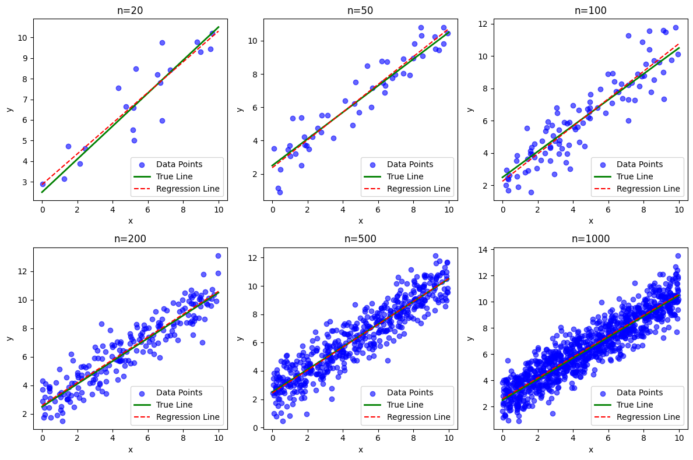

<details><summary>Answer</summary>
The two heads are getting the same input data so they will be calculating the same gradients and will end up learning the same thing. We have two options:
A. Feed the two networks different data. This would essentially mean training the two networks independently or restructuring our data so that batch sizes of treated and control units can be split equally after input.
B. Somehow ensure that each head only receives error gradients for the correct treatment group. This will require writing a custom loss function.
Let's go with B.
</details>
Cell In[1], line 9
Let's go with B.
^
SyntaxError: unterminated string literal (detected at line 9)
import pandas as pd
from sklearn.datasets import load_iris
from sklearn.mixture import GaussianMixture
from sklearn.metrics import accuracy_score
# アイリスデータセットの読み込み
iris = load_iris()
X = iris.data
y_true = iris.target
# GMMモデルのインスタンス化と学習
gmm = GaussianMixture(n_components=3, random_state=42) # クラスタ数を3に設定
gmm.fit(X)
# クラスタリング結果のラベルを取得
y_pred = gmm.predict(X)
df_clustering = pd.DataFrame({'cluster': y_pred, 'target': y_true})
df_clustering["cluster"]=df_clustering["cluster"].map({0:2, 1:0, 2:1}) # クラスタ番号を元のラベルに対応させる
# クラスタリングの精度を計算
accuracy = accuracy_score(df_clustering["cluster"], df_clustering["target"])
# 結果の表示
print(f"クラスタリングの精度: {accuracy}")
クラスタリングの精度: 0.9666666666666667
シーケンス型（sequence types）とは、データが順序付けられているデータ型のことを指します。Pythonなどのプログラミング言語における主なシーケンス型には以下のようなものがあります：
リスト（List）: 可変的で、異なるデータ型の要素を含むことができます。 タプル（Tuple）: 不変的で、一度作成後にはその内容を変更することができません。 文字列（String）: 不変的で、文字の並びを表します。 レンジ（Range）: 数値のシーケンスを生成するために使われます。
# 定義された一年の平均日数
average_days_per_year = 365.2425
# 1日は24時間、1時間は60分、1分は60秒である
seconds_per_day = 24 * 60 * 60
# 一年の秒数を計算
seconds_per_year = average_days_per_year * seconds_per_day
# 一年の秒数を分と秒に変換
minutes_per_year = seconds_per_year // 60 # 整数分のみ取得
seconds_remaining = seconds_per_year % 60 # 残りの秒数
minutes_per_year, seconds_remaining
(525949.0, 12.0)
# Example 1: check if a string is palindrome or not
my_str = 'aIbohPhoBiA'
# make it suitable for caseless comparison
my_str = my_str.casefold()
# reverse the string
rev_str = reversed(my_str)
# check if the string is equal to its reverse
if list(my_str) == list(rev_str):
print("The string is a palindrome.")
else:
print("The string is not a palindrome.")
# Example 2: check if a string is a Palindrome.
string=str(input("Enter string:"))
if(string==string[::-1]):
print("The string is a palindrome")
else:
print("The string isn't a palindrome")
'''
>>Output/Runtime Test Cases
Case 1:
Enter string:madam
The string is a palindrome
Case 2:
Enter string:hello
The string isn't a palindrome
'''
if num > 1:
# check for factors
for i in range(2,num):
if (num % i) == 0:
print(num,"is not a prime number")
print(i,"times",num//i,"is",num)
break
else:
print(num,"is a prime number")
# if input number is less than
# or equal to 1, it is not prime
else:
print(num,"is not a prime number")
# Example 1: display all the prime numbers within an interval
lower = 900
upper = 1000
print("Prime numbers between", lower, "and", upper, "are:")
for num in range(lower, upper + 1):
# all prime numbers are greater than 1
if num > 1:
for i in range(2, num):
if (num % i) == 0:
break
else:
print(num)
# Example 1: display the Fibonacci sequence up to n-th term
nterms = int(input("How many terms? "))
# first two terms
n1, n2 = 0, 1
count = 0
# check if the number of terms is valid
if nterms <= 0:
print("Please enter a positive integer")
# if there is only one term, return n1
elif nterms == 1:
print("Fibonacci sequence upto",nterms,":")
print(n1)
# generate fibonacci sequence
else:
print("Fibonacci sequence:")
while count < nterms:
print(n1)
nth = n1 + n2
# update values
n1 = n2
n2 = nth
import random
import math
BOARD_SIZE = 5 # ボードサイズを定義
def generate_position(board_size):
# スイカとプレイヤーの初期位置をランダムに生成
return (random.randrange(0, board_size), random.randrange(0, board_size))
def determine_move(player_pos, target_pos):
# スイカに向かってプレイヤーを移動させる方向を決定
current_x, current_y = player_pos
target_x, target_y = target_pos
move_x = 1 if current_x < target_x else -1 if current_x > target_x else 0
move_y = 1 if current_y < target_y else -1 if current_y > target_y else 0
return (move_x, move_y)
def move_player(player_pos, move_x, move_y):
# プレイヤーの位置を更新
new_x = player_pos[0] + move_x
new_y = player_pos[1] + move_y
return (new_x, new_y)
def play_game(board_size):
suika_pos = generate_position(board_size)
player_pos = generate_position(board_size)
while suika_pos != player_pos:
move_x, move_y = determine_move(player_pos, suika_pos)
player_pos = move_player(player_pos, move_x, move_y)
print("プレイヤーが移動しました:", player_pos)
print("スイカを見つけました！")
# ゲームを開始
play_game(BOARD_SIZE)
import random
import math
BOARD_SIZE = 5 # ボードサイズを定義
NUM_PLAYERS = 3 # プレイヤーの数
def generate_position(board_size):
# スイカとプレイヤーの初期位置をランダムに生成
return (random.randrange(0, board_size), random.randrange(0, board_size))
def determine_move(player_pos, target_pos):
# スイカに向かってプレイヤーを移動させる方向を決定
current_x, current_y = player_pos
target_x, target_y = target_pos
move_x = 1 if current_x < target_x else -1 if current_x > target_x else 0
move_y = 1 if current_y < target_y else -1 if current_y > target_y else 0
return (move_x, move_y)
def move_player(player_pos, move_x, move_y):
# プレイヤーの位置を更新
new_x = player_pos[0] + move_x
new_y = player_pos[1] + move_y
return (new_x, new_y)
def play_game(board_size, num_players):
suika_pos = generate_position(board_size)
player_positions = [generate_position(board_size) for _ in range(num_players)]
print("スイカの位置:", suika_pos)
winner = None
while winner is None:
for i in range(num_players):
if player_positions[i] == suika_pos:
winner = i
break
move_x, move_y = determine_move(player_positions[i], suika_pos)
player_positions[i] = move_player(player_positions[i], move_x, move_y)
print(f"プレイヤー {i + 1} が移動しました:", player_positions[i])
if player_positions[i] == suika_pos:
winner = i
break
print(f"プレイヤー {winner + 1} がスイカを見つけました！")
# ゲームを開始
play_game(BOARD_SIZE, NUM_PLAYERS)
スイカの位置: (1, 1)
プレイヤー 1 が移動しました: (3, 1)
プレイヤー 2 が移動しました: (2, 2)
プレイヤー 3 が移動しました: (1, 3)
プレイヤー 1 が移動しました: (2, 1)
プレイヤー 2 が移動しました: (1, 1)
プレイヤー 2 がスイカを見つけました！
average = lambda numbers: sum(numbers) / len(numbers) if numbers else 0
even_numbers = [x for x in numbers if (lambda y: y % 2 == 0)(x)]
numbers = [1, 2, 3, 4, 5, 6, 7, 8, 9, 10]
class Sphere():
def __init__(self,radius):
self.radius = radius
def volume(self):
return (4/3)*3.14*self.radius**3
def surface_area(self):
return 4 *3.14 * self.radius **2
import random
import math
class WatermelonHunt:
def __init__(self, board_size=5):
self.board_size = board_size
self.suika_pos = (random.randrange(0, self.board_size), random.randrange(0, self.board_size))
self.player_pos = (random.randrange(0, self.board_size), random.randrange(0, self.board_size))
def calc_distance(self, pos1, pos2):
diff_x = pos1[0] - pos2[0]
diff_y = pos1[1] - pos2[1]
return math.sqrt(diff_x**2 + diff_y**2)
def move_player(self):
current_x, current_y = self.player_pos
target_x, target_y = self.suika_pos
if current_x < target_x:
current_x += 1
elif current_x > target_x:
current_x -= 1
if current_y < target_y:
current_y += 1
elif current_y > target_y:
current_y -= 1
self.player_pos = (current_x, current_y)
print("プレイヤーが移動しました:", self.player_pos)
def play_game(self):
while self.suika_pos != self.player_pos:
distance = self.calc_distance(self.suika_pos, self.player_pos)
print("スイカまでの距離:", distance)
self.move_player()
print("スイカを見つけました！")
import random
import math
class WatermelonHunt:
def __init__(self, board_size=5):
self.board_size = board_size
self.suika_pos = (random.randrange(0, self.board_size), random.randrange(0, self.board_size))
self.player_pos = (random.randrange(0, self.board_size), random.randrange(0, self.board_size))
self.move_count = 0
def calc_distance(self, pos1, pos2):
diff_x = pos1[0] - pos2[0]
diff_y = pos1[1] - pos2[1]
return math.sqrt(diff_x**2 + diff_y**2)
def move_player(self):
current_x, current_y = self.player_pos
target_x, target_y = self.suika_pos
if current_x < target_x:
current_x += 1
elif current_x > target_x:
current_x -= 1
if current_y < target_y:
current_y += 1
elif current_y > target_y:
current_y -= 1
self.player_pos = (current_x, current_y)
self.move_count += 1
#print("プレイヤーが移動しました:", self.player_pos)
def play_game(self):
while self.suika_pos != self.player_pos:
distance = self.calc_distance(self.suika_pos, self.player_pos)
#print("スイカまでの距離:", distance)
self.move_player()
#print("スイカを見つけました！移動数:", self.move_count)
def calculate_average_moves(self, num_games):
total_moves = 0
for _ in range(num_games):
game = WatermelonHunt(self.board_size)
game.play_game()
total_moves += game.move_count
average_moves = total_moves / num_games
print(f"board_size={self.board_size} の平均移動数: {average_moves:.2f}")
return average_moves
# ゲームを実行
game = WatermelonHunt(board_size=5)
game.play_game()
average_moves=game.calculate_average_moves(10)
board_size=5 の平均移動数: 1.90
import random
import math
class WatermelonHunt:
def __init__(self, board_size=5, verbose=True):
self.board_size = board_size
self.suika_pos = (random.randrange(0, self.board_size), random.randrange(0, self.board_size))
self.player_pos = (random.randrange(0, self.board_size), random.randrange(0, self.board_size))
self.verbose = verbose
def calc_distance(self, pos1, pos2):
diff_x = pos1[0] - pos2[0]
diff_y = pos1[1] - pos2[1]
return math.sqrt(diff_x**2 + diff_y**2)
def move_player(self):
current_x, current_y = self.player_pos
target_x, target_y = self.suika_pos
if current_x < target_x:
current_x += 1
elif current_x > target_x:
current_x -= 1
if current_y < target_y:
current_y += 1
elif current_y > target_y:
current_y -= 1
self.player_pos = (current_x, current_y)
if self.verbose:
print("プレイヤーが移動しました:", self.player_pos)
def play_game(self):
while self.suika_pos != self.player_pos:
distance = self.calc_distance(self.suika_pos, self.player_pos)
if self.verbose:
print("スイカまでの距離:", distance)
self.move_player()
print("スイカを見つけました！")
# Example usage
game = WatermelonHunt(verbose=False)
game.play_game()
スイカを見つけました！
import random
import math
class WatermelonHunt:
def __init__(self, board_size=5, verbose=True):
self.board_size = board_size
self.suika_pos = (random.randrange(0, self.board_size), random.randrange(0, self.board_size))
self.player_pos = (random.randrange(0, self.board_size), random.randrange(0, self.board_size))
self.move_count = 0
self.verbose = verbose
def calc_distance(self, pos1, pos2):
diff_x = pos1[0] - pos2[0]
diff_y = pos1[1] - pos2[1]
return math.sqrt(diff_x**2 + diff_y**2)
def move_player(self):
current_x, current_y = self.player_pos
target_x, target_y = self.suika_pos
if current_x < target_x:
current_x += 1
elif current_x > target_x:
current_x -= 1
if current_y < target_y:
current_y += 1
elif current_y > target_y:
current_y -= 1
self.player_pos = (current_x, current_y)
self.move_count += 1
if self.verbose:
print("プレイヤーが移動しました:", self.player_pos)
def play_game(self):
while self.suika_pos != self.player_pos:
distance = self.calc_distance(self.suika_pos, self.player_pos)
if self.verbose:
print("スイカまでの距離:", distance)
self.move_player()
if self.verbose:
print("スイカを見つけました！移動数:", self.move_count)
return self.move_count
def calculate_average_moves(self, num_games):
total_moves = 0
for _ in range(num_games):
game = WatermelonHunt(self.board_size, verbose=False)
total_moves += game.play_game()
average_moves = total_moves / num_games
print(f"board_size={self.board_size} の平均移動数: {average_moves:.2f}")
# ゲームを実行
game = WatermelonHunt(board_size=5, verbose=True)
move_count = game.play_game()
print(f"今回の移動数: {move_count}")
game.calculate_average_moves(10)
スイカを見つけました！移動数: 0
今回の移動数: 0
board_size=5 の平均移動数: 2.40
import random
import math
class WatermelonHunt:
def __init__(self, player_num, board_size=5, verbose=True):
self.player_num = player_num
self.board_size = board_size
self.suika_pos = (random.randrange(0, self.board_size), random.randrange(0, self.board_size))
self.player_pos = [(random.randrange(0, self.board_size), random.randrange(0, self.board_size)) for _ in range(player_num)]
self.move_count = [0]*player_num
self.verbose = verbose
def calc_distance(self, pos1, pos2):
diff_x = pos1[0] - pos2[0]
diff_y = pos1[1] - pos2[1]
return math.sqrt(diff_x**2 + diff_y**2)
def move_player(self, player_index):
current_x, current_y = self.player_pos[player_index]
target_x, target_y = self.suika_pos
if current_x < target_x:
current_x += 1
elif current_x > target_x:
current_x -= 1
if current_y < target_y:
current_y += 1
elif current_y > target_y:
current_y -= 1
self.player_pos[player_index] = (current_x, current_y)
self.move_count[player_index] += 1
if self.verbose:
print(f"プレイヤー{player_index}が移動しました:", self.player_pos[player_index])
def play_game(self):
while True:
for i in range(self.player_num):
distance = self.calc_distance(self.suika_pos, self.player_pos[i])
if self.verbose:
print(f"プレイヤー{i}からスイカまでの距離:", distance)
self.move_player(i)
if self.suika_pos == self.player_pos[i]:
if self.verbose:
print(f"プレイヤー{i}がスイカを見つけました！移動数:", self.move_count[i])
return i, self.move_count[i]
def calculate_average_moves(self, num_games):
total_moves = [0]*self.player_num
for _ in range(num_games):
game = WatermelonHunt(self.player_num, self.board_size, verbose=False)
winner, moves = game.play_game()
total_moves[winner] += moves
average_moves = [moves / num_games for moves in total_moves]
for i, avg in enumerate(average_moves):
print(f"プレイヤー{i}のboard_size={self.board_size} の平均移動数: {avg:.2f}")
# ゲームを実行
game = WatermelonHunt(board_size=5, player_num=3, verbose=False)
move_count = game.play_game()
print(f"今回の勝者の移動数: {move_count}")
今回の勝者の移動数: (0, 1)
game.calculate_average_moves(10)
プレイヤー0のboard_size=5 の平均移動数: 1.30
プレイヤー1のboard_size=5 の平均移動数: 0.20
プレイヤー2のboard_size=5 の平均移動数: 0.10
class Person:
def __init__(self, name, birth, current_year):
self.name = name
self.birth = birth
self.current_year = current_year
def say_hello(self):
print("Hello, my name is", self.name)
def print_birth(self):
print("{} was born in {}".format(self.name, self.birth))
def print_death(self, death):
print("{} died in {}".format(self.name, death))
def age(self):
return self.current_year - self.birth
# インスタンス化とテスト
current_year = 2023
person = Person("John Doe", 1980, current_year)
person.say_hello()
person.print_birth()
person.print_death(2050)
print("{} is {} years old.".format(person.name, person.age()))
課題5#
複数のプレイヤーが参加し、最初にスイカに到達したプレイヤーが勝つゲームを想定します。
player_numという属性を追加し、プレイヤーの数を制御します。
各プレイヤーはそれぞれ独立してスイカに向かって移動し、ゲームの進行は各ターンで全プレイヤーが一度ずつ移動する。あるプレイヤーがスイカに到達したら、ゲームは終了します。
import random
import math
class WatermelonHunt:
def __init__(self, board_size=5, player_num=2):
self.board_size = board_size
self.player_num = player_num
self.suika_pos = (random.randrange(0, self.board_size), random.randrange(0, self.board_size))
self.player_positions = [(random.randrange(0, self.board_size), random.randrange(0, self.board_size)) for _ in range(self.player_num)]
self.winner = None
def calc_distance(self, pos1, pos2):
diff_x = pos1[0] - pos2[0]
diff_y = pos1[1] - pos2[1]
return math.sqrt(diff_x**2 + diff_y**2)
def move_player(self, player_index):
current_x, current_y = self.player_positions[player_index]
target_x, target_y = self.suika_pos
if current_x < target_x:
current_x += 1
elif current_x > target_x:
current_x -= 1
if current_y < target_y:
current_y += 1
elif current_y > target_y:
current_y -= 1
self.player_positions[player_index] = (current_x, current_y)
print(f"プレイヤー {player_index + 1} が移動しました: {self.player_positions[player_index]}")
if self.player_positions[player_index] == self.suika_pos:
self.winner = player_index + 1
def play_game(self):
while self.winner is None:
for i in range(self.player_num):
distance = self.calc_distance(self.suika_pos, self.player_positions[i])
print(f"プレイヤー {i + 1} のスイカまでの距離: {distance}")
self.move_player(i)
if self.winner is not None:
break
print(f"プレイヤー {self.winner} がスイカを見つけました！")
# ゲームを開始する
game = WatermelonHunt(board_size=5, player_num=3)
game.play_game()
import random
import math
class WatermelonHunt:
def __init__(self, board_size=5, player_num=2):
self.board_size = board_size
self.suika_pos = (random.randrange(0, self.board_size), random.randrange(0, self.board_size))
self.players_pos = [(random.randrange(0, self.board_size), random.randrange(0, self.board_size)) for _ in range(player_num)]
self.player_num = player_num
def calc_distance(self, pos1, pos2):
diff_x = pos1[0] - pos2[0]
diff_y = pos1[1] - pos2[1]
return math.sqrt(diff_x**2 + diff_y**2)
def move_player(self, player_idx):
current_x, current_y = self.players_pos[player_idx]
target_x, target_y = self.suika_pos
if current_x < target_x:
current_x += 1
elif current_x > target_x:
current_x -= 1
if current_y < target_y:
current_y += 1
elif current_y > target_y:
current_y -= 1
self.players_pos[player_idx] = (current_x, current_y)
print(f"プレイヤー{player_idx + 1}が移動しました: {self.players_pos[player_idx]}")
def play_game(self):
turn = 0
while True:
print(f"ターン {turn + 1}")
for player_idx in range(self.player_num):
distance = self.calc_distance(self.suika_pos, self.players_pos[player_idx])
print(f"プレイヤー{player_idx + 1}のスイカまでの距離: {distance}")
self.move_player(player_idx)
if self.players_pos[player_idx] == self.suika_pos:
print(f"プレイヤー{player_idx + 1}がスイカを見つけました！")
return
turn += 1
# Example usage
game = WatermelonHunt(board_size=5, player_num=3)
game.play_game()
ターン 1
プレイヤー1のスイカまでの距離: 2.8284271247461903
プレイヤー1が移動しました: (2, 1)
プレイヤー2のスイカまでの距離: 4.123105625617661
プレイヤー2が移動しました: (3, 3)
プレイヤー3のスイカまでの距離: 2.23606797749979
プレイヤー3が移動しました: (3, 1)
ターン 2
プレイヤー1のスイカまでの距離: 1.4142135623730951
プレイヤー1が移動しました: (3, 0)
プレイヤー1がスイカを見つけました！
from WatermelonHunt import WatermelonHunt
import numpy as np
def generate_data(beta_0, beta_1, epsilon, n):
"""
線形回帰モデルに基づいてデータポイントを生成する関数
Args:
beta_0: 切片 (true value)
beta_1: 傾き (true value)
n: データ数
Returns:
説明変数 (x) と目的変数 (y) の NumPy 配列
"""
x = np.random.uniform(low=0, high=10, size=n)
epsilon = np.random.normal(loc=0, scale=1, size=n)
y = beta_0 + beta_1 * x + epsilon
return x, y
def linear_regression(x, y):
"""
線形回帰モデルのパラメータを推定する関数
Args:
x: 説明変数の NumPy 配列
y: 目的変数の NumPy 配列
Returns:
推定されたパラメータ (beta_1, beta_0)
"""
# 平均値の計算
x_mean = np.mean(x)
y_mean = np.mean(y)
# β₁の推定
numerator = np.sum((x - x_mean) * (y - y_mean))
denominator = np.sum((x - x_mean) ** 2)
beta_hat = numerator / denominator
# β₀の推定
alpha_hat = y_mean - beta_hat * x_mean
return alpha_hat, beta_hat
# Define true parameter values
beta_0 = 2.5
beta_1 = 0.8
# Define data sizes
data_sizes = [20, 50, 100, 200, 500,1000]
for n in data_sizes:
x, y = generate_data(beta_0, beta_1, 3, n)
beta_hat, alpha_hat = linear_regression(x, y)
print(f"Data size: {n}, Estimated beta_0: {alpha_hat:.2f}, Estimated beta_1: {beta_hat:.2f}")
Data size: 20, Estimated beta_0: 0.64, Estimated beta_1: 3.52
Data size: 50, Estimated beta_0: 0.75, Estimated beta_1: 2.80
Data size: 100, Estimated beta_0: 0.81, Estimated beta_1: 2.51
Data size: 200, Estimated beta_0: 0.78, Estimated beta_1: 2.64
Data size: 500, Estimated beta_0: 0.81, Estimated beta_1: 2.46
Data size: 1000, Estimated beta_0: 0.78, Estimated beta_1: 2.49
loop_n = 100
alpha_hat_list = []
beta_hat_list = []
for _ in range(loop_n):
x, y = generate_data(beta_0, beta_1, 3, 10)
beta_hat, alpha_hat = linear_regression(x, y)
alpha_hat_list.append(alpha_hat)
beta_hat_list.append(beta_hat)
alpha_hat_list=np.array(alpha_hat_list)
beta_hat_list=np.array(beta_hat_list)
print(f"平均 beta_0 推定値: {np.mean(alpha_hat_list):.4f}, 標準偏差: {np.std(alpha_hat_list):.4f}")
print(f"平均 beta_1 推定値: {np.mean(beta_hat_list):.4f}, 標準偏差: {np.std(beta_hat_list):.4f}")
平均 beta_0 推定値: 0.8088, 標準偏差: 0.1282
平均 beta_1 推定値: 2.4248, 標準偏差: 0.7118
# Define true parameter values
beta_0 = 2.5
beta_1 = 0.8
# Define data sizes
data_sizes = [20, 50, 100, 200, 500,1000]
# Number of subplots (rows and columns)
rows, cols = 2, 3 # Adjust as needed for your data sizes
# Create a figure and subplots
fig, axes = plt.subplots(rows, cols, figsize=(12, 8))
# Iterate through data sizes and subplots
for i in range(rows):
for j in range(cols):
n = data_sizes[i * cols + j] # Calculate index for each subplot
# Generate data, estimate parameters, and plot
x, y = generate_data(beta_0, beta_1, 3, n)
beta_hat, alpha_hat = linear_regression(x, y)
x_line = np.linspace(0, 10, 100)
y_line = beta_0 + beta_1 * x_line # True line using true parameters
y_est_line = alpha_hat + beta_hat * x_line # Estimated line
ax = axes[i, j] # Access current subplot
ax.scatter(x, y, color='blue', label='Data Points', alpha=0.6)
ax.plot(x_line, y_line, color='green', label='True Line', linewidth=2) # True line
ax.plot(x_line, y_est_line, color='red', label='Regression Line', linestyle='dashed')
ax.set_title(f'n={n}')
ax.set_xlabel('x')
ax.set_ylabel('y')
ax.legend(loc="lower right")
# Adjust layout and display the plot
plt.tight_layout()
plt.show()

from sklearn.linear_model import LinearRegression
from sklearn.metrics import mean_squared_error
from sklearn import datasets
from sklearn.model_selection import train_test_split
from sklearn.linear_model import Perceptron
iris= datasets.load_iris()
X = iris.data # 特徴量データ
y = iris.target # ラベルデータ
assert len(X) == len(y)
# 訓練データとテストデータに分割
X_train, X_test, y_train, y_test = train_test_split(X, y, test_size=0.3, random_state=1, stratify=y)
model=Perceptron(tol=1e-3, random_state=0)
model.fit(X_train, y_train) # モデルを訓練データに適合
y_predicted=model.predict(X_test) # テストデータでラベルを予測
from sklearn.metrics import accuracy_score
accuracy_score(y_test, y_predicted) # 予測精度（accuracy）の評価
0.9777777777777777
import numpy as np
from sklearn import datasets
from sklearn.mixture import GaussianMixture
from sklearn.metrics import accuracy_score
# アイリスデータセットの読み込み
iris = datasets.load_iris()
X = iris.data
y = iris.target
# GMMモデルの生成
gmm = GaussianMixture(n_components=3)
# データへの適合
gmm.fit(X)
GaussianMixture(n_components=3)In a Jupyter environment, please rerun this cell to show the HTML representation or trust the notebook.
On GitHub, the HTML representation is unable to render, please try loading this page with nbviewer.org.
GaussianMixture(n_components=3)
predicted_labels = gmm.predict(X)
accuracy = accuracy_score(y, predicted_labels)
print(f"精度: {accuracy:.3f}")
精度: 0.333
predicted_labels
array([1, 1, 1, 1, 1, 1, 1, 1, 1, 1, 1, 1, 1, 1, 1, 1, 1, 1, 1, 1, 1, 1,
1, 1, 1, 1, 1, 1, 1, 1, 1, 1, 1, 1, 1, 1, 1, 1, 1, 1, 1, 1, 1, 1,
1, 1, 1, 1, 1, 1, 2, 2, 2, 2, 2, 2, 2, 2, 2, 2, 2, 2, 2, 2, 2, 2,
2, 2, 0, 2, 0, 2, 0, 2, 2, 2, 2, 0, 2, 2, 2, 2, 2, 0, 2, 2, 2, 2,
2, 2, 2, 2, 2, 2, 2, 2, 2, 2, 2, 2, 0, 0, 0, 0, 0, 0, 0, 0, 0, 0,
0, 0, 0, 0, 0, 0, 0, 0, 0, 0, 0, 0, 0, 0, 0, 0, 0, 0, 0, 0, 0, 0,
0, 0, 0, 0, 0, 0, 0, 0, 0, 0, 0, 0, 0, 0, 0, 0, 0, 0])
value_map= {1: 0, 2:1, 0: 2}
result = predicted_labels.copy()
# Replace values using array indexing
for old_val, new_val in value_map.items():
result[predicted_labels == old_val] = new_val
result
array([0, 0, 0, 0, 0, 0, 0, 0, 0, 0, 0, 0, 0, 0, 0, 0, 0, 0, 0, 0, 0, 0,
0, 0, 0, 0, 0, 0, 0, 0, 0, 0, 0, 0, 0, 0, 0, 0, 0, 0, 0, 0, 0, 0,
0, 0, 0, 0, 0, 0, 1, 1, 1, 1, 1, 1, 1, 1, 1, 1, 1, 1, 1, 1, 1, 1,
1, 1, 2, 1, 2, 1, 2, 1, 1, 1, 1, 2, 1, 1, 1, 1, 1, 2, 1, 1, 1, 1,
1, 1, 1, 1, 1, 1, 1, 1, 1, 1, 1, 1, 2, 2, 2, 2, 2, 2, 2, 2, 2, 2,
2, 2, 2, 2, 2, 2, 2, 2, 2, 2, 2, 2, 2, 2, 2, 2, 2, 2, 2, 2, 2, 2,
2, 2, 2, 2, 2, 2, 2, 2, 2, 2, 2, 2, 2, 2, 2, 2, 2, 2])
y
array([0, 0, 0, 0, 0, 0, 0, 0, 0, 0, 0, 0, 0, 0, 0, 0, 0, 0, 0, 0, 0, 0,
0, 0, 0, 0, 0, 0, 0, 0, 0, 0, 0, 0, 0, 0, 0, 0, 0, 0, 0, 0, 0, 0,
0, 0, 0, 0, 0, 0, 1, 1, 1, 1, 1, 1, 1, 1, 1, 1, 1, 1, 1, 1, 1, 1,
1, 1, 1, 1, 1, 1, 1, 1, 1, 1, 1, 1, 1, 1, 1, 1, 1, 1, 1, 1, 1, 1,
1, 1, 1, 1, 1, 1, 1, 1, 1, 1, 1, 1, 2, 2, 2, 2, 2, 2, 2, 2, 2, 2,
2, 2, 2, 2, 2, 2, 2, 2, 2, 2, 2, 2, 2, 2, 2, 2, 2, 2, 2, 2, 2, 2,
2, 2, 2, 2, 2, 2, 2, 2, 2, 2, 2, 2, 2, 2, 2, 2, 2, 2])
accuracy = accuracy_score(y, result)
print(f"精度: {accuracy:.3f}")
精度: 0.967